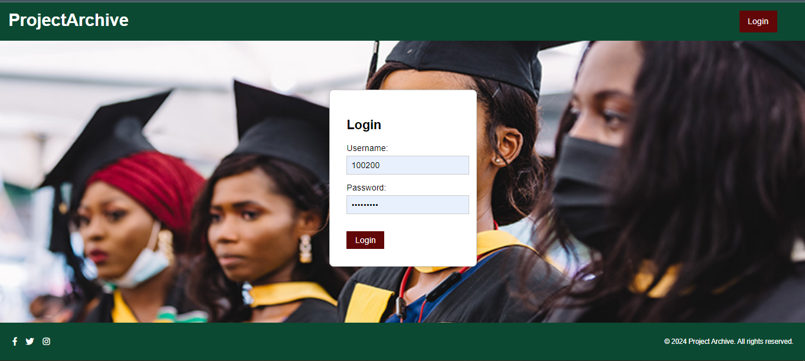
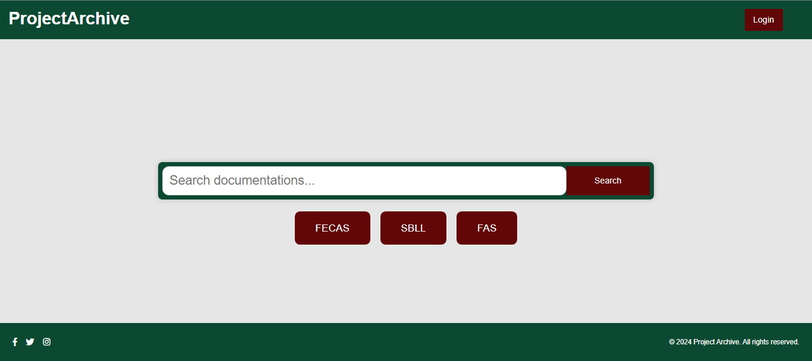

01. Project Archive
Final year project documentations play a crucial role for students and institutions, yet managing hardcopy archives of them poses significant challenges. This project aimed to design and implement a web-based archive system to digitize documentation management at Regent University College of Science and Technology, Ghana. An Agile methodology was adopted for this project. This involved gathering requirements through detailed interviews and observations. The design phase utilized UML diagrams, including use case and ER diagrams. The proposed system was built using web technologies like HTML, CSS, Bootstrap, and Django (Python). This system enables different user roles, including visitors, students, department heads, and administrators, to access and manage project documents online conveniently. The implementation involved developing a functional web application, which included coding and testing. Unit testing was conducted to ensure the application met the required standards. Additionally, the project documentations are stored in Google Drive using the Google Drive API, which ensures secure and accessible storage of all documents. As a result of this project, the Project Documentation Archive System (ProjectArchive) for Regent University has been developed. This system allows students to upload their projects and access past documents online at their convenience.
 02. Incoming
Incoming...